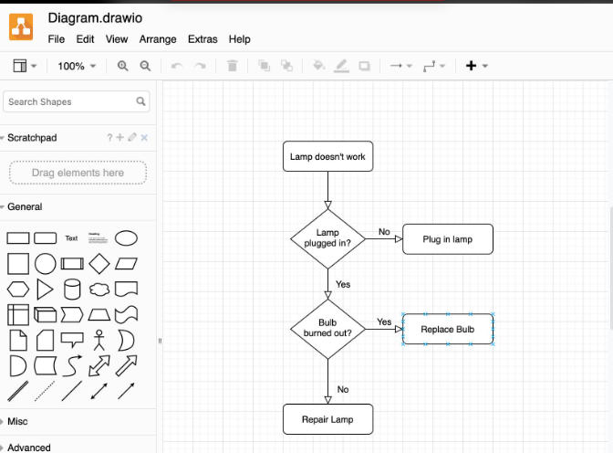
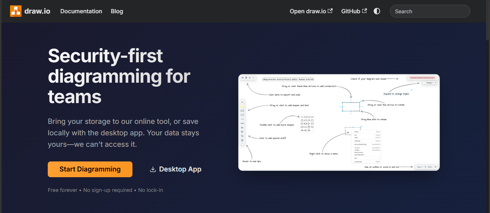
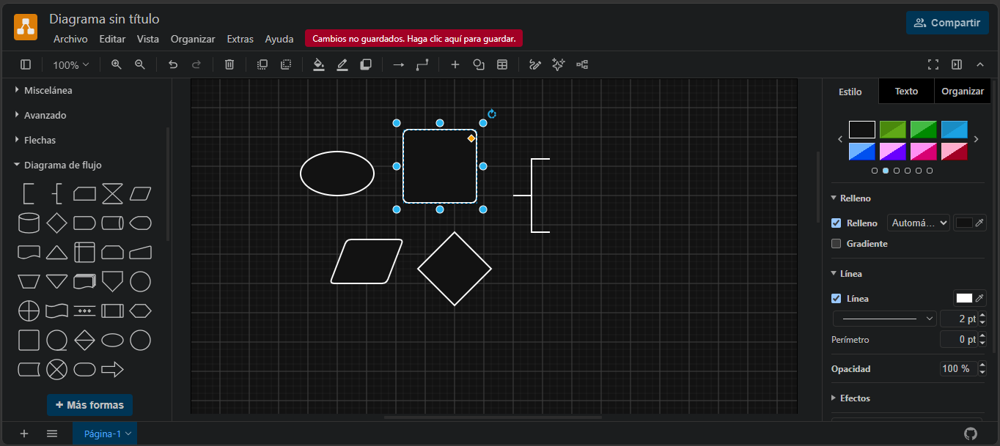
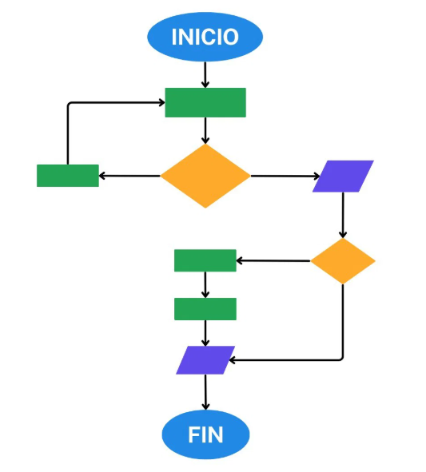
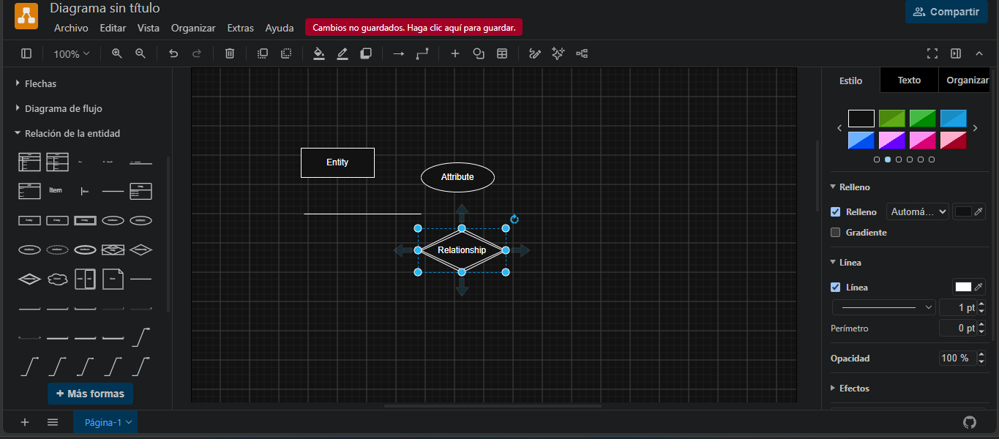
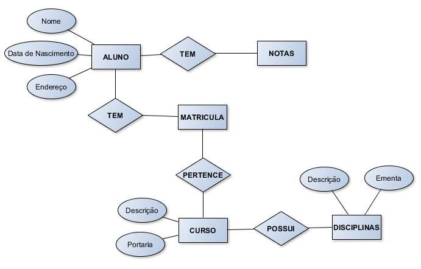

Creación de diagramas en draw.io
¿Que es Draw.io?
Draw.io es una herramienta gratuita en línea que sirve para crear diagramas, esquemas y gráficos de manera visual, sin necesidad de saber programar.

¿Para que sirve?
Se utiliza para crear diferentes tipos de diagramas:
- Diagramas de flujo
- Diagramas entidad-relación (ER)
- Diagramas UML
- Mapas conceptuales
- Diagramas de redes
- Organigramas
Como crear un diagrama de flujo
- Ingresar en Draw.io

- Dar a START DIAGRAMMING
- Activa las figuras de diagrama de flujo:
En el panel izquierdo, entra en Más formas y busca la categoría Diagrama De flujo
. Actívala y pulsa Aplicar.

- Agrega las figuras adecuadas
- Óvalo: inicio y fin.
- Rectángulo: proceso o cálculo.
- Paralelogramo: entrada o salida de datos.
- Rombo: decisión
- Flechas: dirección del proceso.

- Conecta las figuras arrastra las figuras al lienzo, escribe el texto dentro
y únelas con flechas siguiendo el orden del algoritmo.

Como crear un MER en draw.io
- Ingresar en Draw.io
- Dar a START DIAGRAMMING
- Activa las figuras de entidad-relación:
En el panel izquierdo, entra en Más formas y busca la categoría Entidad relacion
. Actívala y pulsa Aplicar.
- Agrega las entidades y relaciones
- Rectángulos: entidades
- Óvalos: atributos
- Rombos: relaciones
- Líneas y cardinalidades

- Define las cardinalidades: si la relación es uno a uno (1:1), uno a muchos (1:N)
o muchos a muchos (N:M), según los requisitos del sistema.

Reto interactivo
Realizar los tipos de diagramas que faltan en Draw.io siendo:
- Diagramas UML
- Mapas conceptuales
- Diagramas de redes
- Organigramas